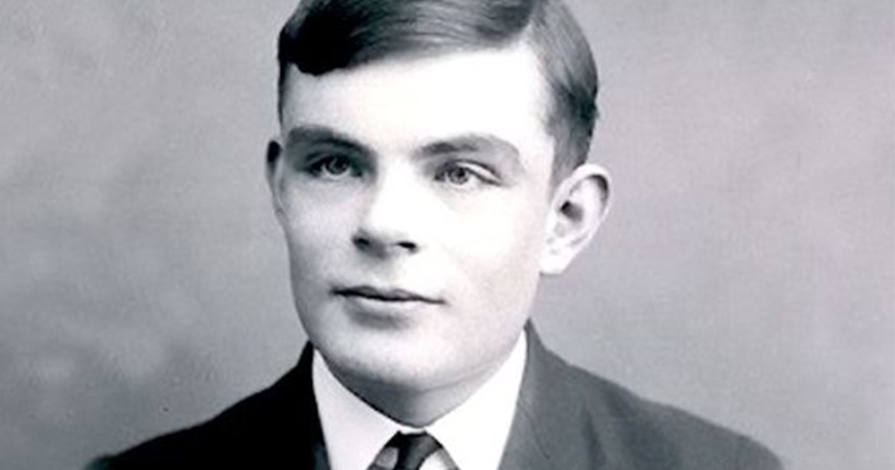

------------------------------------------------------------------------------------
Alan Turing

(Alan Mathison Turing; Londres, 1912 - Wilmslow, Reino Unido, 1954) Matemático británico. Pasó sus primeros trece años en la India, donde su padre trabajaba en la Administración colonial. De regreso al Reino Unido, estudió en el King's College y, tras su graduación, se trasladó a la Universidad estadounidense de Princeton, donde trabajó con el lógico Alonzo Church.
En 1937 publicó un célebre artículo en el que definió una máquina calculadora de capacidad infinita (máquina de Turing) que operaba basándose en una serie de instrucciones lógicas, sentando así las bases del concepto moderno de algoritmo. Turing describió en términos matemáticos precisos cómo un sistema automático con reglas extremadamente simples podía efectuar toda clase de operaciones matemáticas expresadas en un lenguaje formal determinado. La máquina de Turing era tanto un ejemplo de su teoría de computación como una prueba de que un cierto tipo de máquina computadora podía ser construida.
La Segunda Guerra Mundial ofreció un insospechado marco de aplicación práctica de sus teorías, al surgir la necesidad de descifrar los mensajes codificados que la Marina alemana empleaba para enviar instrucciones a los submarinos que hostigaban los convoyes de ayuda material enviados desde Estados Unidos; Turing, al mando de una división de la Inteligencia británica, diseñó tanto los procesos como las máquinas que, capaces de efectuar cálculos combinatorios mucho más rápidamente que cualquier ser humano, fueron decisivos en la ruptura final del código.
Alan Turing definió además un método teórico para decidir si una máquina era capaz de pensar como un hombre (test de Turing) y realizó contribuciones a otras ramas de la matemática aplicada, como la aplicación de métodos analíticos y mecánicos al problema biológico de la morfogénesis. En el ámbito personal, su condición de homosexual fue motivo constante de fuertes presiones sociales y familiares, hasta el punto de especularse si su muerte por intoxicación fue accidental o se debió a un intento de suicidio.